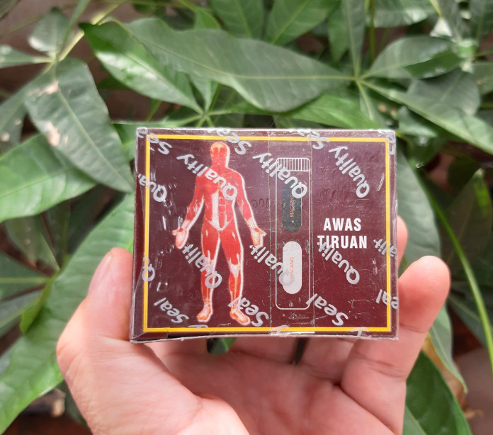

NGUYÊN NHÂN ĐAU NHỨC XƯƠNG KHỚP¶
CÁCH CHỮA ĐAU XƯƠNG KHỚP BẰNG THẢO DƯỢC¶
- CÁCH CHỮA ĐAU NHỨC XƯƠNG KHỚP BẰNG THẢO DƯỢC
- Hỏi:
- Trả lời:
- 1. Thuốc xương khớp của Malaysia màu đỏ
- 2. Thuốc xương khớp Malaysia màu xanh
- Giá bán:
- Liên hệ đặt hàng:
- 3. Thuốc bột, thuốc sắc nguồn gốc từ bài thuốc độc hoạt tang ký sinh
- Giá bán:
- Liên hệ đặt hàng:
- 4. Thuốc bột, thuốc sắc nguồn gốc từ bài thận khí hoàn
- Giá bán:
- Liên hệ đặt hàng:
- 5. Các bài thảo dược ngâm rượu
- Thảo dược 10 vị chữa đau xương khớp, bổ thận, tăng cường sức khỏe
- Thảo dược 29 vị chữa đau xương khớp, bổ thận, tăng cường sức khỏe
- 6. Các bài viết khác có thể bạn chưa xem
MẸ BẦU ĂN YẾN - MẸ KHỎE, CON THÔNG MINH¶
ĐÀN ÔNG CÓ NÊN DÙNG TỔ YẾN?¶
TỔ YẾN TĂNG CƯỜNG SỨC KHỎE CHO NGƯỜI GIÀ¶
TỔ YẾN ĐỐI VỚI NGƯỜI BỆNH¶
TÁC DỤNG CỦA YẾN SÀO ĐỐI VỚI TRẺ EM¶
.jpg)
CÁC CÂU HỎI THƯỜNG GẶP VỀ YẾN SÀO¶
- CÁC CÂU HỎI THƯỜNG GẶP VỀ YẾN SÀO
- 1. Yến sào là gì?
- 2. Thành phần của yến sào là gì?
- 3. Có bao nhiêu loại yến?
- 4. Phân biệt tổ yến thiên nhiên và tổ yến nhà như thế nào?
- 5. Tại sao yến sào lại quý như vậy?
- 6.Những ai nên dùng yến sào, ai không nên dùng yến sào?
- 7. Tại sao phụ nữ nên ăn yến khi mang thai?
- 8. Ăn yến có sự tăng cân không?
- 9. Ăn yến lúc nào là tốt nhất?
- 10. Dùng yến sào sao cho tốt?
- 11. Bảo quản tổ yến như thế nào?
- 12. Dùng yến sào thường xuyên có tốt hay không?
- 13. Có rất nhiều loại yến sào giả, liệu có cách nào phân biệt thật giả không?
- 14. Giá tổ yến như thế nào là hợp lý nhất?
- 15. Mua tổ yến ở đâu giá cả hợp lý nhất?
- 16. Tại sao yến sào có nhiều màu?
- 17. Yến sào nguyên chất được cảm nhận ra sao?
- 18. Lợi ích cơ bản yến sào mang lại là gì?
- 19. Chỉ nên ăn tổ yến vào những ngày cảm thấy mệt mỏi phải không?
- 20. Mỗi lần nên sử dụng một lượng tổ yến bao nhiêu là đủ?
- 21. Tại sao chỉ nên hấp cách thủy tổ yến mà không nên nấu?
- 22. Tổ yến sau khi hấp cách thủy bị tan ra, có phải là tổ yến giả?
THUỐC TRỊ ĐAU NHỨC XƯƠNG KHỚP HIỆU QUẢ MÀ AN TOÀN¶
- THUỐC TRỊ ĐAU NHỨC XƯƠNG KHỚP HIỆU QUẢ MÀ AN TOÀN
- Hỏi:
- Trả lời:
- Các triệu chứng của cơn đau nhức xương khớp ở người già
- Những Loại thuốc xương khớp mà tôi thất tốt nhất từ trước tới nay
- 1. Thuốc xương khớp malaysia
- Giá bán thuốc xương khớp malaysia
- 2. Thuốc Jex Max của Mỹ chữa bệnh đau nhức xương khớp
- 2. Viên sủi đặc chữa bệnh đau nhức xương khớp Gen S Effer
- 3. Khang Thọ Gold giảm đau nhức xương khớp
- 4. Glucosamine Orihiro trị xương khớp nhật
- 5. Thuốc chữa trị đau nhức xương khớp Habelric dành riêng cho người già
- 6. Thuốc chữa đau nhức xương khớp Jointlab dành riêng cho người già
- 7. Viêm khớp Tâm Bình trị đau nhức xương khớp cho người già
- 8. Thuốc GHV BONE khám đau nhức xương khớp với CN bột đạm thủy phân
- 9. Shark Cartilage Costar trị đau nhức xương khớp
- Các bài viết khác có thể bạn chưa xem
Note
Liên hệ Thảo mộc HHT - Điện thoại: 0964.421.551 hoặc 0932.340.345